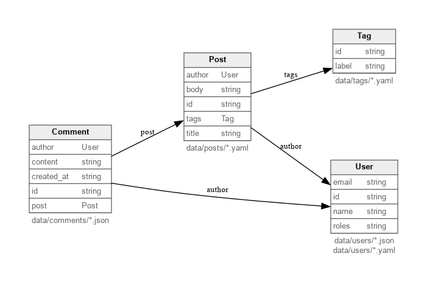

Overview
Mergeway’s goal is to make metadata a commodity putting it in the open and treating it as code. Instead of juggling spreadsheets or custom scripts, you describe entities in YAML/JSON, run a quick validation, and catch broken references before they reach production. By storing metadata as code, changes become a simple patch.
What the CLI Does
- Stores entity definitions and relationships in version-controlled files.
- Validates schemas and records so required fields and references stay consistent.
- Generates simple reports you can attach to pull requests or issues.
Key Features
- Workspace scaffolding:
mergeway-cli initwrites a startermergeway.yamlinto your working directory so you can begin defining entities immediately. - Dual schema sources: Author entity fields inline in YAML or reference existing JSON Schema documents (
json_schema) so teams can reuse specs. - Object lifecycle commands:
list,get,create,update, anddeleteoperate on local YAML/JSON files, respecting schema-defined identifiers whether they come from record fields or the special$pathfile-path mode. - Deterministic formatting:
mergeway-cli fmtemits canonical structure and rewrites files in place (use--stdoutto preview changes) to keep diffs clean. - Layered validation: Format, schema, and reference phases catch structural, typing, and cross-entity errors before they land in main.
- Schema introspection:
mergeway-cli entity showandmergeway-cli config exportsurface normalized schemas or derived JSON Schema for documentation and automation.
Why Teams Use Mergeway
- Fast feedback: One command surfaces missing fields, enum mismatches, or invalid references.
- Git-native: Changes live in branches and pull requests, making reviews trivial.
- Lightweight: No server component—just a binary that runs locally or in CI.
Where to Go Next
- Install Mergeway (or build from source).
- Follow the Workspace set-up.
- Review the Basic Concepts and Schema Format when you define entities.
- Browse through the CLI Reference for command syntax.
Updates land in the Changelog. File GitHub issues for questions, bugs, or requests.
For a more general introduction to Mergeway, visit the homepage
Getting Started
This guide introduces the basic concepts and structure of a Mergeway workspace. It is intended for new users who want to understand how to set up and use Mergeway effectively.
A Mergeway workspace is just a folder with a few predictable parts. Knowing the vocabulary makes the CLI output easier to read.
Building Blocks
- Workspace: Folder tracked in Git that contains
mergeway.yaml, schemas, and optional objects. All commands run from here. - Schema: YAML/JSON that defines fields and references. Each file describes one entity.
- Object: Optional data instances stored under
data/. - Reference: A link from one schema or field to another (
type: ref). Mergeway validates referential integrity.
Validation Flow
- Mergeway loads
mergeway.yamlto locate schemas and records. - Schemas are parsed and checked for required fields, types, and references.
- Records (if present) are validated against their schemas.
For field syntax and configuration options, see the Schema Format.
Installation
Pick the method that fits your setup. You can install a local mergeway-cli binary or run the public container image directly.
Option 1 – Download a Release (macOS, Linux)
Use the pre‑built archives published on GitHub releases. The example below downloads version v0.4.0 for your platform and moves the binary into /usr/local/bin:
curl -L https://github.com/mergewayhq/mergeway-cli/releases/download/v0.4.0/mergeway-cli-\
$(uname | tr '[:upper:]' '[:lower:]')-amd64.tar.gz | tar -xz
sudo mv mergeway-cli /usr/local/bin/
Check the published SHA‑256 checksum before moving the binary if you operate in a locked‑down environment.
Option 2 – Docker
Use the public GitHub Container Registry image to run the CLI without installing the binary locally:
docker run ghcr.io/mergewayhq/mergeway-cli version
Option 3 – Go Install (for contributors)
If you have Go installed you can build the CLI directly from the repository using go install:
go install github.com/mergewayhq/mergeway-cli@latest
This drops the binary in $GOPATH/bin (often ~/go/bin). Prefer tagged versions in production.
Option 4 – Nix / Flake Install
The repository defines a Nix flake that packages the CLI. Using the Nix package manager you can install, run or develop the CLI without managing Go toolchains manually:
Install into your Nix profile
nix profile install github:mergewayhq/mergeway-cli
This command builds the flake’s default package (mergeway‑cli) and adds it to your user profile. The binary is symlinked into $HOME/.nix-profile/bin.
Run without installing
nix run github:mergewayhq/mergeway-cli -- help
Use nix run to execute the CLI directly from the flake without permanently installing it. Append -- and your subcommand (e.g. nix run github:mergewayhq/mergeway-cli -- version) to pass arguments to the CLI.
Build locally
If you clone the repository you can build the binary via Nix:
# Clone and enter the repository
git clone https://github.com/mergewayhq/mergeway-cli.git
cd mergeway-cli
# Build the CLI from the flake
nix build
# The binary appears in ./result/bin/mergeway-cli
./result/bin/mergeway-cli version
This method uses the flake.nix file to produce reproducible builds.
Development shell
For contributors, the flake exposes a development shell that provides Go 1.24.x, linters and documentation tooling. Run nix develop (or the provided devenv shell) from the project root to enter a shell with all dependencies and pre‑commit hooks installed.
Option 5 – Build from Source
You can also build the CLI manually from source. Clone the repository and build using the provided Makefile:
git clone https://github.com/mergewayhq/mergeway-cli.git
cd mergeway-cli
make build # compiles the CLI into bin/mergeway-cli
./bin/mergeway-cli version
This approach requires Go 1.24.x and is recommended for people packaging the CLI themselves or contributing to the project.
Verify the installation
After installation, confirm that the mergeway‑cli binary is on your PATH and prints version information:
mergeway-cli --version
You should see output similar to:
Mergeway CLI v0.4.0 (commit abc1234)
If the command is missing, confirm that the installation path is on your PATH.
Move on to the Getting Started guide once the binary is available.
Workspace setup
Goal: scaffold a workspace, define an entity, evolve the layout as requirements grow, and learn the core Mergeway commands end-to-end.
All commands assume the
mergeway-clibinary is on yourPATH.
1. Scaffold a Workspace with Inline Data
mkdir farmers-market
cd farmers-market
mergeway-cli init
mergeway-cli init creates a mergeway.yaml entry file. Replace its contents with an inline entity that also carries a few inline records:
mergeway:
version: 1
entities:
Category:
description: Simple lookup table for product groupings
identifier: slug
fields:
slug:
type: string
required: true
label:
type: string
required: true
data:
- slug: produce
label: Fresh Produce
- slug: pantry
label: Pantry Staples
Try a few commands:
mergeway-cli entity list
mergeway-cli entity show Category
mergeway-cli list --type Category
mergeway-cli validate
At this stage everything lives in a single file—perfect for tiny datasets.
2. Move Records into External YAML Files
As the table grows, shift the data into dedicated files. Create a folder for category data and move the records there:
mkdir -p data/categories
cat <<'YAML' > data/categories/categories.yaml
items:
- slug: produce
label: Fresh Produce
- slug: pantry
label: Pantry Staples
- slug: beverages
label: Beverages
YAML
Update mergeway.yaml so Category reads from the new file:
mergeway:
version: 1
entities:
Category:
description: Simple lookup table for product groupings
identifier: slug
include:
- data/categories/*.yaml
fields:
slug:
type: string
required: true
label:
type: string
required: true
Re-run the commands to see the effect:
mergeway-cli list --type Category
mergeway-cli get --type Category beverages
mergeway-cli validate
3. Split Schema Definitions and Add JSON Data
Larger workspaces benefit from keeping schemas in their own files. Create an entities/ folder for additional definitions:
mkdir -p entities
Add a new Product entity that pulls from a JSON file using a JSONPath selector:
cat <<'YAML' > entities/Product.yaml
mergeway:
version: 1
entities:
Product:
description: Market products with category references
identifier: sku
include:
- path: data/products.json
selector: "$.items[*]"
fields:
sku:
type: string
required: true
name:
type: string
required: true
category:
type: Category
required: true
price:
type: number
required: true
YAML
Create the JSON data file the schema expects. Notice that one product references a household category that we haven’t defined yet:
cat <<'JSON' > data/products.json
{
"items": [
{"sku": "apple-001", "name": "Honeycrisp Apple", "category": "produce", "price": 1.25},
{"sku": "oat-500", "name": "Rolled Oats", "category": "pantry", "price": 4.99},
{"sku": "soap-010", "name": "Castile Soap", "category": "household", "price": 6.75}
]
}
JSON
Finally, have mergeway.yaml pull in any external schemas:
mergeway:
version: 1
include:
- entities/*.yaml
entities:
Category:
description: Simple lookup table for product groupings
identifier: slug
include:
- data/categories/*.yaml
fields:
slug:
type: string
required: true
label:
type: string
required: true
Explore the richer workspace:
mergeway-cli entity list
mergeway-cli entity show Product
mergeway-cli list --type Product
mergeway-cli validate
mergeway-cli validate now reports a broken reference because the household category doesn’t exist yet:
phase: references
type: Product
id: soap-010
file: data/products.json
message: referenced Category "household" not found
Add the missing category to the YAML file and validate again:
cat <<'YAML' >> data/categories/categories.yaml
- slug: household
label: Household Goods
YAML
mergeway-cli validate
With the additional category in place, validation succeeds and both entities are in sync.
4. Export Everything as JSON
Collect the full dataset into a single snapshot:
mergeway-cli export --format json --output market-snapshot.json
cat market-snapshot.json
Keep the Workflow Running Smoothly
Once the basics feel comfortable, automate formatting and reviews so the workspace stays healthy:
- Set Up Mergeway with GitHub to enforce
mergeway-cli fmt --lintin Actions and route reviews through CODEOWNERS. - Enforce Mergeway Formatting with pre-commit so contributors run
mergeway-cli fmtlocally before every commit.
You’re Done!
Nice work—you’ve defined entities inline, moved data to YAML, added JSON-backed entities, and exercised the key Mergeway commands. You’re ready to scale the workspace to your team’s needs.
Schema Format
Schemas can live entirely inside mergeway.yaml or be split across additional include files (for example under an entities/ folder) for readability. Likewise, object data may be defined inline or stored under data/. Pick the mix that matches your editing workflow—comments below highlight conventions for modular repositories without requiring them.
Configuration Entry (mergeway.yaml)
The workspace entry file declares the schema version and the files to load:
mergeway:
version: 1
include:
- entities/*.yaml
mergeway.versiontracks breaking changes in the configuration format (keep it at1).includeis a list of glob patterns. Each matching file is merged into the configuration. Patterns need to resolve to at least one file; otherwise Mergeway reports an error.
Schema Files (optional includes)
A schema file declares one or more entity definitions. Store them in whichever folder makes sense for your workflow (many teams use entities/); the location has no semantic impact. The example below defines a Post entity:
mergeway:
version: 1
entities:
Post:
description: Blog posts surfaced on the marketing site
identifier: id
include:
- data/posts/*.yaml
fields:
id: string
title:
type: string
required: true
description: Human readable title
body: string
author:
type: User
required: true
data:
- id: post-inline
title: Inline Example
author: user-alice
body: Inline data lives in the schema file.
For advanced scenarios you can expand identifier into a mapping:
mergeway:
version: 1
entities:
Post:
description: Blog posts surfaced on the marketing site
identifier:
field: id
generated: true
include:
- data/posts/*.yaml
fields:
# ...
generated: true is an advisory hint for downstream automation (code generators, UI scaffolding). The CLI still expects inline identifiers or an explicit --id flag when creating objects.
If you want the file path itself to be the identifier, use the reserved $path value:
mergeway:
version: 1
entities:
Note:
identifier: $path
include:
- data/notes/*.yaml
fields:
title:
type: string
required: true
In that mode, Mergeway uses the workspace-relative path (for example data/notes/alpha.yaml) as the object ID. $path only works for one-object-per-file sources. Inline data, items: arrays, and selectors that return multiple objects from the same file are rejected because they would produce duplicate identifiers.
When several objects live in one file, provide a JSONPath selector to extract them:
mergeway:
version: 1
entities:
User:
description: Directory of account holders sourced from JSON
identifier: id
include:
- path: data/users.json
selector: "$.users[*]"
fields:
# ...
Strings remain a shorthand for path with no selector; Mergeway then reads the entire file as a single object (or uses the items: array if present).
Required Sections
| Key | Description |
|---|---|
identifier | Identifier source for each record. Provide either a string field name (for example id), the reserved $path value to use the workspace-relative file path, or a mapping with field, optional generated, and pattern. Field-based identifiers can be strings, integers, or numbers. $path identifiers are strings and require one object per file. The generated flag is advisory for tooling; the CLI still expects identifiers to be supplied inline or via --id when creating objects. |
include | List of data sources. Each entry can be a glob string (shorthand) or a mapping with path and optional selector property. Omit only when you rely exclusively on inline data. Without a selector, Mergeway treats the whole file as a single object. |
fields | Map of field definitions. Use either the shorthand field: type (defaults to optional) or the expanded mapping for advanced options. Provide either fields or json_schema for each entity. |
json_schema | Path to a JSON Schema (draft 2020-12) file relative to the schema that declares the entity. When present, Mergeway derives field definitions from the JSON Schema and you can omit the fields block. |
data | Optional array of inline records. Each entry needs to contain the identifier field and follows the same schema rules as external data files. This block cannot be used when identifier: $path because inline records do not have file paths. |
Add description anywhere you need extra context. Entities accept it alongside identifier, and each field definition supports its own description value.
Inline Data
Inline data is helpful for tiny lookup tables or bootstrapping a demo without creating additional files. Define records directly inside the entity specification:
mergeway:
version: 1
entities:
Person:
description: Lightweight profile objects
identifier: id
include:
- data/people/*.yaml
fields:
id: string
name:
type: string
required: true
description: Preferred display name
age: integer
data:
- id: person-1
name: Alice
age: 30
- id: person-2
name: Bob
age: 42
Inline records are loaded alongside file-based data. If a record with the same identifier exists both inline and on disk, the file wins. Inline records are read-only at runtime—mergeway-cli data update and mergeway-cli data delete target files only. Types that use identifier: $path cannot declare inline data.
Field Shorthand
When a field only needs a type, map entries can use the compact field: type syntax. These fields default to required: false and behave identically to the expanded form otherwise. Switch to the full mapping whenever you need attributes like required, repeated, or format.
Field Attributes
| Attribute | Example | Notes |
|---|---|---|
type | string, number, boolean, list[string], User, `User | Team` |
required | true / false | Required fields appear in every record. |
repeated | true / false | Indicates an array field. |
description | Service owner team | Optional but recommended. |
enum | [draft, active, retired] | Allowed values. |
default | Any scalar | Value injected when the field is missing. |
JSON Schema Entities
For larger teams it can be convenient to author schemas once and consume them in multiple places. Entities now support a json_schema property that points to an on-disk JSON Schema document (draft 2020-12). The path is resolved relative to the file that declares the entity and needs to live inside the repository—external $ref documents and network lookups are rejected.
When json_schema is present, omit the fields map. Mergeway parses the JSON Schema and converts to its native field definitions:
type: objectbecomes nested field groups, preservingrequiredentries for each level.type: arraysetsrepeated: trueand uses theitemsschema to determine the element type.enum,const, oroneOfblocks translate into Mergeway enums (string values only).$refsegments are resolved within the same JSON Schema file (e.g.,#/$defs/...).- Custom references to other entities use the same
x-reference-typeproperty emitted bymergeway-cli config export. - Reference unions such as
User | Teamare only supported in nativefields:definitions. They are not supported injson_schemaentities.
See examples/json-schema for a runnable workspace that demonstrates this flow end-to-end.
Keep schema files small and focused—one entity per file is the easiest to maintain.
Data Files
Each data file provides the fields required by its entity definition. Declaring a type at the top is optional—the CLI infers it from the entity that referenced the file (through include/selector) and only errors when a conflicting type value is present. Keeping it in the file can still be helpful for humans who open an arbitrary YAML document.
type: Post # optional; falls back to the entity that included this file
id: post-001
title: Launch Day
author: user-alice
body: |
We are excited to announce the product launch.
You can store one object per file (as above) or provide an items: array to keep several objects together. Mergeway removes any top-level type key before validating the record, so referencing the same file from multiple entities requires the selector approach described below. If a type uses identifier: $path, each file must contain exactly one object; items: arrays are rejected.
For $path identifiers, Mergeway normally derives IDs relative to the workspace root, for example data/notes/alpha.yaml. If an entity include points outside the workspace root, the derived ID may contain ../..., for example ../secondary/products/widget.yaml. Those external-root records can still be listed, fetched, validated, and exported, but create, update, and delete remain limited to files inside the workspace root.
JSONPath selectors let you extract objects from nested structures—handy when you need to read a subset of a larger document. For example, selector: "$.users[*]" walks through the users array in a JSON file and emits one record per element. Mergeway validates that the selector returns objects; any other shape triggers a format error.
Identifier fields accept numeric payloads as well. For example, the following record is valid when the schema marks id as an integer:
id: 42
name: Numeric Identifier
Good Practices
- Prefer references (
type: User) over duplicating identifiers. - Use reference unions sparingly.
type: User | Teamis valid, but validation requires each referenced identifier to resolve in exactly one target set. If the same identifier exists in both sets, validation fails as ambiguous. - Group files in predictable folders (
data/posts/,data/users/, etc.). - Run
mergeway-cli validateafter every change to catch problems immediately.
See examples/reference-union for a minimal runnable workspace that demonstrates User | Team.
See examples/external-root-path for a minimal runnable workspace that demonstrates external-root $path identifiers.
Need more context? Return to the Basic Concepts page for the bigger picture.
How-to Guides
The how-to guides capture focused, task-oriented recipes for Mergeway users. Each guide assumes you already understand the core concepts and need a concrete sequence of steps to accomplish a specific outcome, such as enforcing formatting in CI or wiring Mergeway into deployment automation.
Set Up Mergeway with GitHub
Goal: wire Mergeway into GitHub so formatting stays consistent and ownership of datasets is clearly distributed across teams.
Throughout this guide we will reference GrainBox Market, a fictional marketplace that stores product data in data/products/ and category lookups in data/categories/. The Data Platform team maintains mergeway.yaml, while Inventory Operations and Category Management own their respective folders.
Prerequisites
- A repository that already contains a valid
mergeway.yamland the files it references. - GitHub Actions enabled for the repository.
- Permission to configure GitHub teams (or at least invite individual maintainers) so CODEOWNERS can route reviews correctly.
1. Add a Mergeway Workflow
Create .github/workflows/mergeway-fmt.yml to ensure every pull request keeps GrainBox data formatted:
name: Mergeway Formatting
on:
pull_request:
branches: [main]
paths:
- "**/*.yaml"
- "**/*.yml"
- mergeway.yaml
push:
branches: [main]
jobs:
mergeway-cli-fmt:
runs-on: ubuntu-latest
steps:
- name: Check out repository
uses: actions/checkout@v4
- name: Install Go toolchain
uses: actions/setup-go@v5
with:
go-version-file: go.mod
- name: Install Mergeway CLI
run: go install github.com/mergewayhq/mergeway-cli@latest
- name: Lint Mergeway formatting
run: mergeway-cli fmt --lint
This job fails fast whenever a record under data/products/ or data/categories/ is out of format, ensuring reviewers only see clean diffs. Adjust the paths filters if your workspace stores data outside YAML.
2. Explain the Failure Mode to Contributors
mergeway-cli fmt --lint prints each offending file, so GrainBox developers fix CI failures locally with mergeway-cli fmt --in-place. Capture that reminder in your pull-request template or CONTRIBUTING guide so the workflow feels helpful rather than mysterious.
3. Assign Ownership with CODEOWNERS
Formatting alone is not enough—you also want the right people reviewing Mergeway changes. GitHub’s CODEOWNERS file routes pull requests to specific teams or individuals based on path globs.
Create .github/CODEOWNERS with entries for both GrainBox teams and any shared files:
# Mergeway schema is owned by Data Platform
mergeway.yaml @grainbox/data-platform
# Data files are split by operational team
data/products/ @grainbox/inventory-ops
data/categories/ @grainbox/category-mgmt
Key considerations:
- Teams need to exist inside your GitHub organization (for example
@org/team-slug). If you don’t have teams yet, either create them under Settings → Teams or list specific people such as@aliceand@bob. - You can mix teams and individuals to cover overlapping areas—for instance, keep
mergeway.yamlowned by@grainbox/data-platformand also list@lead-architectfor extra oversight. - CODEOWNERS applies to all pull requests, so combining it with the workflow guarantees every Mergeway change is reviewed by someone who understands that slice of the dataset.
4. Keep Versions Predictable
GrainBox pins versions for long-lived branches by replacing @latest with a tag (e.g., @v1.2.3) or by caching the binary. Matching versions between local machines and CI prevents “works on my laptop” formatting diffs.
Once the workflow and CODEOWNERS file land in the default branch, any pull request that touches Mergeway files will:
- Trigger the formatting check so contributors fix issues before merging.
- Automatically request reviewers from the right team, ensuring accountability for each dataset.
That combination keeps Mergeway-managed data healthy as your GitHub organization grows.
Enforce Mergeway Formatting with pre-commit
Goal: run mergeway-cli fmt automatically before every commit so contributors push consistently formatted GrainBox Market data.
We will keep using the fictional GrainBox Market repository from the GitHub how-to: schemas live in mergeway.yaml, product data sits under data/products/, and category lookups live in data/categories/.
Prerequisites
- The Mergeway CLI (
mergeway-cli) is already installed on developer machines and in yourPATH. - Python 3.8+ is available (pre-commit ships via
pipx,pip, or Homebrew). - Your repo includes the Mergeway workspace you want to protect.
1. Install pre-commit Locally
Pick the method that matches your tooling:
pipx install pre-commit # recommended
# or
pip install pre-commit # inside a virtualenv
# or
brew install pre-commit # macOS
Developers only need to do this once per workstation.
2. Configure the Hook
Add a .pre-commit-config.yaml file in the repo root (or extend your existing config) with a local hook that invokes mergeway-cli fmt:
repos:
- repo: local
hooks:
- id: mergeway-fmt
name: mergeway fmt
entry: mergeway-cli fmt
language: system
pass_filenames: false
files: ^data/(products|categories)/.*\.(ya?ml|json)$
Why these settings?
entry: mergeway-cli fmtrewrites any out-of-format records before the commit proceeds (it defaults to in-place mode).pass_filenames: falselets Mergeway discover files frommergeway.yamlrather than only the files staged by Git—useful when your workspace spans multiple folders.filesnarrows execution to the GrainBox data directories so unrelated commits (docs, code) skip the hook. Adjust the regex for your layout or remove the key to run on everything.
If you prefer CI-style failures, swap --in-place for --lint. The hook will then block the commit and print offending files without mutating them.
3. Install the Git Hook
Tell pre-commit to write the hook into .git/hooks/pre-commit:
pre-commit install --hook-type pre-commit
To cover pushes from automation as well, you may also install it as a pre-push hook:
pre-commit install --hook-type pre-push
Each contributor only needs to run these commands once per clone.
4. Test the Setup
Run the hook against every tracked file to confirm it formats data as expected:
pre-commit run mergeway-fmt --all-files
- If the repo already follows Mergeway’s canonical layout, the command prints
mergeway-fmt..................................Passed. - If output shows
Failed, inspect the listed files, rerunmergeway-cli fmt <file>manually if needed, then stage the changes.
Developers now get immediate feedback before commits ever leave their machines, and CI stays clean because repositories reach GitHub with consistent Mergeway formatting.
CLI Reference
Every command shares a set of global flags (use --long-name; single-dash long flags like -root are not supported). Global flags can appear before or after the command name.
| Flag | Description |
|---|---|
--root | Path to the workspace (defaults to .). |
--config | Explicit path to mergeway.yaml (defaults to <root>/mergeway.yaml). |
--format | Output format (yaml or json, default yaml). |
--fail-fast | Stop after the first validation error (where supported). |
--yes | Auto-confirm prompts (useful for delete). |
--verbose | Emit additional logging. |
Repository setup
Schema utilities
For more information on the schema, please consult the Schema Format
Object operations
Need a refresher on terminology? See the Basic Concepts page.
mergeway-cli init
Synopsis: Scaffold the directory layout and default configuration for a Mergeway workspace.
Usage
mergeway-cli [global flags] init
mergeway-cli init targets the directory referenced by --root (default .) and does not accept positional arguments. Use mkdir/cd before running the command if you want to initialize a new folder.
Need a walkthrough after initialization? Continue with the Getting Started guide.
Example
mkdir blog-metadata
cd blog-metadata
mergeway-cli init
Output resembles:
Initialized repository at .
mergeway-cli init ensures a starter mergeway.yaml exists in the target directory. Add folders such as entities/ or data/ yourself once the project grows; keeping everything in a single file is perfectly valid. Re-run the command safely—it won’t overwrite existing files.
The default configuration contains:
# mergeway-cli configuration
mergeway:
version: 1
entities: {}
Related Commands
mergeway-cli validate— run after adding schema and data files.mergeway-cli config lint— verify configuration changes once you editmergeway.yaml.
mergeway-cli validate
Synopsis: Check schemas, records, and references, emitting formatted errors when something is wrong.
Usage
mergeway-cli [global flags] validate [--phase format|schema|references]... [--fail-fast]
| Flag | Description |
|---|---|
--phase | Optional. Repeat to run a subset of phases. By default all phases run (format, schema, then references). |
--fail-fast | Stop after the first error. Defaults to the global --fail-fast flag. |
When you request the references phase, Mergeway automatically includes the schema phase so reference checks have the information they need.
Examples
Run the command from the workspace root (or add --root to point elsewhere).
Validate the current workspace:
mergeway-cli validate
Add --format json when you need machine-readable output.
Output:
validation succeeded
Run validation after introducing a breaking schema change:
mergeway-cli validate
Output when the Post schema requires an author but the record is missing it:
- phase: schema
type: Post
id: post-001
file: data/posts/launch.yaml
message: missing required field "author"
The command writes errors to standard output and still exits with status 0, so automation can check whether any errors were returned.
Related Commands
mergeway-cli config lint— validate configuration without loading data.mergeway-cli list— locate the objects mentioned in validation errors.
mergeway-cli entity list
Synopsis: Show every entity Mergeway discovered from your configuration.
Usage
mergeway-cli [global flags] entity list
No command-specific flags. Add the global --root flag if you need to inspect another workspace.
Example
List entities for the examples/ workspace bundled with the repository:
mergeway-cli --root examples/full entity list
Output:
Comment
Post
Tag
User
Entities are listed alphabetically.
Related Commands
mergeway-cli entity show— inspect an individual schema definition.mergeway-cli config lint— verify the configuration if an entity is missing.
mergeway-cli entity show
Synopsis: Print the normalized schema for a given entity.
Usage
mergeway-cli [global flags] entity show <entity>
No additional flags. Use --format json if you prefer JSON output, and add the global --root flag when working outside the workspace root.
Example
Show the Post entity in YAML form:
mergeway-cli --root examples/full --format yaml entity show Post
Output (abridged):
name: Post
source: .../examples/full/entities/Post.yaml
identifier:
field: id
filepatterns:
- data/posts/*.yaml
fields:
title:
type: string
required: true
author:
type: User
required: true
body:
type: string
Related Commands
mergeway-cli entity list— find available entities.mergeway-cli config export— generate a JSON Schema from an entity definition.
mergeway-cli config lint
Synopsis: Validate configuration files (including includes) without touching data.
Usage
mergeway-cli [global flags] config lint
No additional flags.
Example
Run the command from the workspace root (or pass --root):
mergeway-cli config lint
Output:
configuration valid
If the command encounters a problem (for example, an include pattern that matches no files), it prints the error and exits with status 1.
Run this command whenever you edit mergeway.yaml or add new entity definitions to catch syntax mistakes early.
Related Commands
mergeway-cli config export— derive a JSON Schema for a type.mergeway-cli validate— validate both schemas and data.
mergeway-cli config export
Synopsis: Emit a JSON Schema for one of your types.
Usage
mergeway-cli [global flags] config export --type <type>
| Flag | Description |
|---|---|
--type | Required. Type identifier to export. |
Example
Run the command from the workspace root (or pass --root). Export the Post type as JSON Schema:
mergeway-cli --root examples --format json config export --type Post
Output (abridged):
{
"$schema": "https://json-schema.org/draft/2020-12/schema",
"properties": {
"author": {
"type": "string",
"x-reference-type": "User"
},
"title": {
"type": "string"
}
},
"required": ["id", "title", "author"],
"type": "object"
}
Fields that reference other types include the x-reference-type hint.
Reference unions such as User | Team are not exportable as JSON Schema. They are supported only in native Mergeway fields: definitions, so mergeway-cli config export returns an error for those entities.
Validate your workspace (mergeway-cli config lint or mergeway-cli validate) after editing type files to ensure the exported schema stays in sync.
Related Commands
mergeway-cli entity show— view the full Mergeway representation of an entity.mergeway-cli validate— ensure data conforms to the schema you just exported.
mergeway-cli list
Synopsis: List object identifiers for a given type, optionally filtered by a field.
Usage
mergeway-cli [global flags] list --type <type> [--filter key=value]
| Flag | Description |
|---|---|
--type | Required. Type identifier to query. |
--filter | Optional key=value string used to filter objects before listing their IDs. The comparison is a simple string equality check. |
Example
Run the command from the workspace root. If you need to operate on another directory, add the global --root flag.
List all posts in the quickstart workspace:
mergeway-cli list --type Post
Output:
post-001
If an entity uses identifier: $path, the output contains workspace-relative file paths such as data/notes/alpha.yaml. When the entity reads files from outside the workspace root, the identifier may contain ../..., for example ../secondary/products/widget.yaml.
Filter by author:
mergeway-cli list --type Post --filter author=user-alice
Output:
post-001
Related Commands
mergeway-cli get— inspect a specific object.mergeway-cli create— add a new object when an ID is missing.
mergeway-cli get
Synopsis: Print the fields of one object.
Usage
mergeway-cli [global flags] get --type <type> <id>
| Flag | Description |
|---|---|
--type | Required. Type identifier that owns the object. |
<id> | Required positional argument representing the object identifier. For entities that use identifier: $path, this is the relative file path ID, which may include ../... for records loaded from outside the workspace root. |
Use --format json if you prefer JSON output.
Example
Run the command from the workspace root. Use --root if you need to target another workspace.
Fetch the post-001 record as YAML:
mergeway-cli --format yaml get --type Post post-001
Output:
author: user-alice
body: |
We are excited to announce the product launch.
id: post-001
title: Launch Day
For path-based identifiers, the lookup uses the file path instead:
mergeway-cli --format yaml get --type Note data/notes/alpha.yaml
External-root $path records work the same way:
mergeway-cli --format yaml get --type Product ../secondary/products/widget.yaml
Related Commands
mergeway-cli list— discover identifiers before callingget.mergeway-cli update— change object fields.
mergeway-cli create
Synopsis: Create a new object file that conforms to an entity definition.
Usage
mergeway-cli [global flags] create --type <type> [--file path] [--id value]
| Flag | Description |
|---|---|
--type | Required. Type identifier to create. |
--file | Optional path to a YAML/JSON payload. If omitted, data is read from STDIN. |
--id | Optional identifier override for field-based identifiers. Required when the entity uses identifier: $path, in which case the value must be the workspace-relative file path to create. |
Example
Run the command from the workspace root (or pass --root if you are elsewhere). Create a user by piping a YAML document and letting Mergeway write the file under data/users/:
cat <<'PAYLOAD' > user.yaml
name: Bob Example
PAYLOAD
mergeway-cli create --type User --file user.yaml --id user-bob
Output:
User user-bob created
The command writes data/users/user-bob.yaml with the provided fields. Remove the temporary user.yaml file afterward and run mergeway-cli validate to confirm the new object passes checks.
When an entity uses identifier: $path, pass the target file path with --id, for example --id data/notes/alpha.yaml. Mergeway uses that workspace-relative path as the object ID and does not persist a $path field into the file.
create only writes inside the workspace root. If a type loads records from an external path such as ../secondary/products/*.yaml, you can still list, get, validate, and export those records, but create will reject IDs that point outside the workspace root.
Related Commands
mergeway-cli update— modify an existing object.mergeway-cli delete— remove an object.
mergeway-cli update
Synopsis: Modify an existing object. You can replace the object entirely or merge in a subset of fields.
Usage
mergeway-cli [global flags] update --type <type> --id <id> [--file path] [--merge]
| Flag | Description |
|---|---|
--type | Required. Type identifier. |
--id | Required. Object identifier to update. For entities that use identifier: $path, this is the workspace-relative file path. |
--file | Optional path to a YAML/JSON payload (defaults to STDIN). |
--merge | Merge fields into the existing object instead of replacing it. |
Example
Run the command from the workspace root (or add --root to target another workspace). Update a post title by merging in a tiny payload:
cat <<'PAYLOAD' > post-update.yaml
title: Launch Day (Updated)
PAYLOAD
mergeway-cli update --type Post --id post-001 --file post-update.yaml --merge
Output:
Post post-001 updated
Run mergeway-cli validate after significant updates to confirm references still resolve. Without --merge, the payload replaces the entire object.
For entities that use identifier: $path, pass the workspace-relative file path to --id, for example mergeway-cli update --type Note --id data/notes/alpha.yaml --file note.yaml --merge.
If the resolved record lives outside the workspace root, update rejects it. External-root $path records are intentionally read-only through the CLI even though they can still be listed, fetched, validated, and exported.
Related Commands
mergeway-cli create— add new objects.mergeway-cli delete— remove objects that are no longer needed.
mergeway-cli delete
Synopsis: Remove an object file from the workspace.
Usage
mergeway-cli [global flags] delete --type <type> <id>
| Flag | Description |
|---|---|
--type | Required. Type identifier. |
<id> | Required positional argument identifying the object to delete. For entities that use identifier: $path, this is the workspace-relative file path. |
The command prompts for confirmation unless you pass the global --yes flag.
Global flags (like --yes or --root) can appear before or after the command name.
Example
Run the command from the workspace root (or add --root to target another workspace). Delete a user without prompting:
mergeway-cli --yes delete --type User user-bob
Output:
User user-bob deleted
For path-based identifiers, delete by file path:
mergeway-cli --yes delete --type Note data/notes/alpha.yaml
Like create and update, delete only operates on files inside the workspace root. If a $path record comes from an external include such as ../secondary/products/widget.yaml, you can inspect and export it, but delete will reject that identifier.
Related Commands
mergeway-cli list— confirm an object’s identifier before deleting.mergeway-cli create— recreate an object if you delete the wrong one.
mergeway-cli gen-erd
Generates an Entity Relationship Diagram (ERD) of your data model.
mergeway-cli gen-erd --path <output-file>
This command inspects your configuration and generates a visual representation of your entities and their relationships. It relies on Graphviz (specifically the dot command) to produce the output image.
Arguments
| Argument | Description |
|---|---|
--path | Required. The path where the generated image will be saved. The file extension determines the output format (e.g., .png, .svg). |
Examples
Generate a PNG image of your schema:
mergeway-cli gen-erd --path schema.png
Generate an SVG:
mergeway-cli gen-erd --path schema.svg
Example output, based on the full example:

Requirements
The dot executable from Graphviz needs to be installed and available in your system’s PATH.
mergeway-cli export
Synopsis: Export repository objects into a single JSON or YAML document.
Usage
mergeway-cli [global flags] export [--output <path>] [entity...]
| Flag | Description |
|---|---|
--output | Optional path to write the exported document. Defaults to STDOUT. |
entity... | Optional list of type names to include. Omitting the list exports every entity defined in the workspace. |
The export format matches the global --format flag (yaml by default).
Examples
Export every entity in the repository as YAML to the terminal:
mergeway-cli export
Export only the User and Post entities as JSON into a file:
mergeway-cli --format json export --output snapshot.json User Post
Each top-level key in the output map is the entity name; the value is an array of records sorted by ID.
Entities that use identifier: $path can also be exported when their include paths point outside the workspace root. In that case the record IDs still resolve from those external file paths, but the exported payload contains only the object fields.
Related Commands
mergeway-cli list— inspect available identifiers before exporting.mergeway-cli get— fetch a single object instead of the full dataset.
mergeway-cli version
Synopsis: Display the CLI build metadata (semantic version, commit, build date).
Usage
mergeway-cli [global flags] version
No additional flags.
This command does not touch workspace files; global flags like --root are ignored.
Example
mergeway-cli --format json version
Output:
{
"version": "0.4.0",
"commit": "a713be5",
"buildDate": "2025-10-22T18:25:03Z"
}
Values change with each build; use the command to confirm which binary produced a validation report or data change.
Related Commands
mergeway-cli validate— include the CLI version in validation artifacts for traceability.